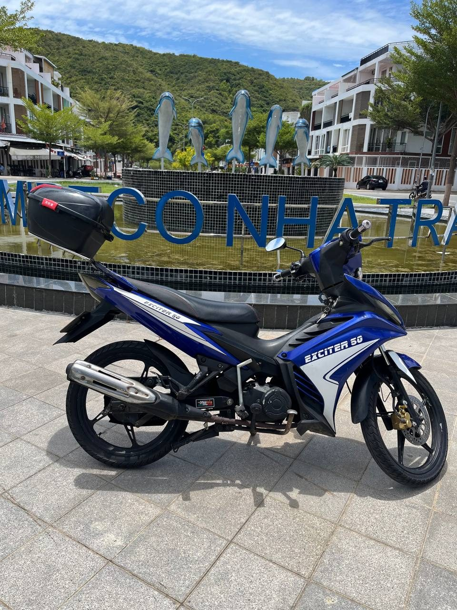
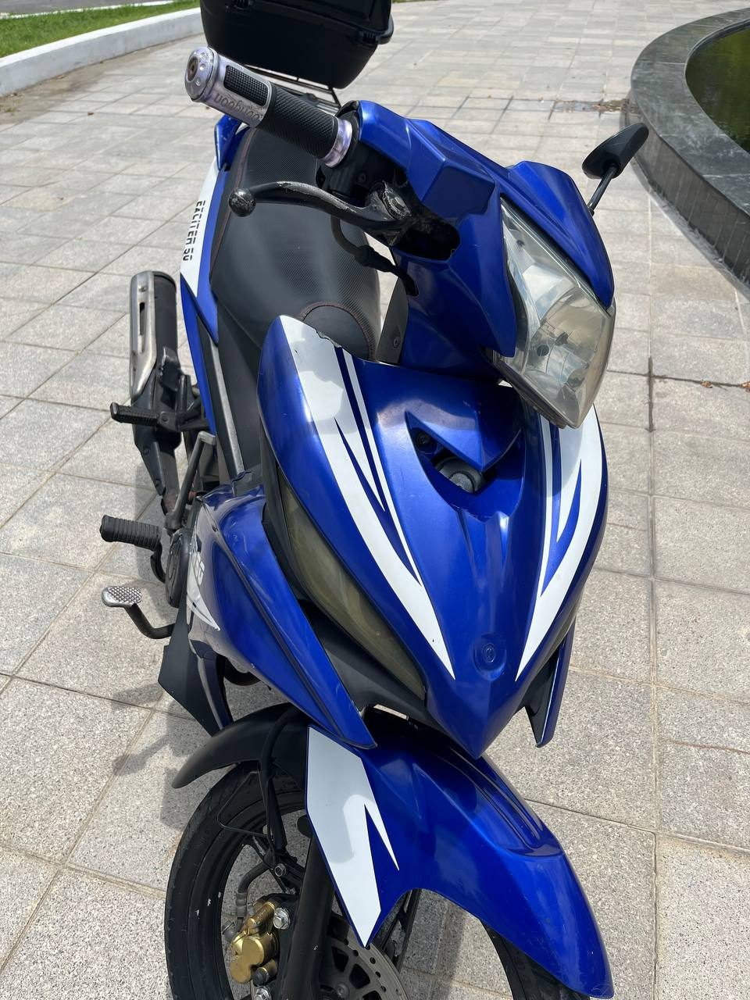
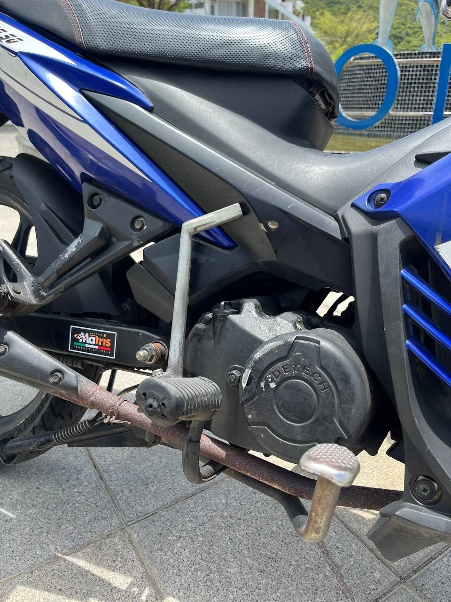

저희가 냐짱으로 가져온 첫 스포티 50cc. 9,000,000 ₫에 판매 완료.

이 오토바이는 베트남 북부 하이퐁에서 냐짱으로 가져왔습니다. 2017년부터 그곳에 등록되어 있었습니다(번호판 15AH-008.93). 냐짱에서 제가 직접 타 보고 판매했습니다.
Espero 50C2는 DETECH가 만든 베트남산 50cc 반자동으로, Exciter 스타일의 스포츠 차체입니다. 서류: 50cc, 블루카드. 클러치 없는 4단 기어, 앞 디스크, 뒤 드럼, 알루미늄 휠. 판매 시 주행거리 약 48,600 km.
스포츠 차체의 매우 빠른 오토바이 — 서류상 50cc인데도 모두를 놀라게 했습니다. 시끄럽고 개구쟁이 같은 성격: 도로에서 달리고 싶어지고, 시선을 끌고, 뽐내기 좋습니다. 단순한 이동수단이 아니라 재미를 원한다면 바로 이 오토바이였습니다.
시끄럽습니다. 조용하고 차분한 주행이나 초보자에게는 최선이 아닙니다.
이미 자신 있게 타고, 50cc 등급에서 스포티한 성격을 원하는 분.

